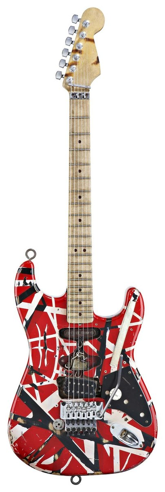

Eddie Van Halen, born Edward Lodewijk Van Halen on January 26, 1955, in Amsterdam, Netherlands, was one of the most influential and innovative guitarists in the history of rock music. He moved with his family to Pasadena, California, in 1962, where he and his brother Alex were trained in classical piano before gravitating toward rock. While Alex initially played guitar and Eddie took up drums, they eventually swapped instruments—a decision that would shape the future of rock music.
Eddie co-founded the band Van Halen in 1972 with Alex, bassist Michael Anthony, and vocalist David Lee Roth. The band burst onto the scene with their self-titled debut album in 1978, which showcased Eddie’s revolutionary guitar playing, especially on the instrumental track "Eruption." That solo redefined the electric guitar’s potential, introducing techniques like two-handed tapping to the mainstream. Eddie’s fast, fluid style, combined with his inventive use of harmonics, dive bombs, and feedback, created a distinctive sound that became synonymous with 1980s rock.
 Van Halen's success continued through the 1980s and 1990s, with a string of multi-platinum albums and massive arena tours. Eddie was not just a guitarist; he was a sonic architect. He often modified his guitars and amplifiers to achieve his signature "brown sound"—a warm, saturated tone that guitarists still try to emulate. His most famous guitar, nicknamed "Frankenstrat," was a self-built hybrid of different guitar parts, showcasing his technical curiosity and hands-on approach to music.
The band’s lineup changed over the years, most notably when Roth was replaced by Sammy Hagar in 1985. Despite internal conflicts and shifts in musical direction, Eddie remained the creative core of Van Halen, writing most of the music and crafting many of their biggest hits, including "Jump," "Panama," "Hot for Teacher," and "Why Can’t This Be Love."
Eddie’s influence extended far beyond Van Halen. He was a sought-after collaborator, perhaps most famously contributing the iconic guitar solo to Michael Jackson’s "Beat It" in 1982—a performance he did for free, which helped bridge the worlds of hard rock and pop. His playing inspired countless guitarists, from arena rockers to bedroom shredders, and helped shape the guitar-driven sound of the late 20th century.
Despite health issues and personal struggles, Eddie continued to play and perform until shortly before his death on October 6, 2020, after a long battle with cancer. His legacy is monumental; not only did he reinvent the way the guitar could be played, but he also redefined what it could sound like.
Eddie Van Halen wasn’t just a guitarist: he was an inventor, a performer, and a true original. His blend of technical brilliance, showmanship, and creative innovation made him a legend. For millions of fans and musicians alike, Eddie’s music remains not just influential, but immortal.